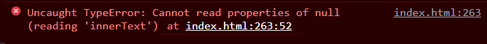
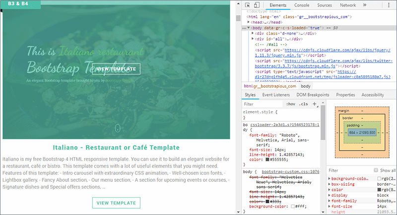

Learning Goals
At the end of this Tutorial, you will be able to:
- Use the <script> tag to include JavaScript code in a HTML file and to link to external JavaScript files.
- Ensure that JavaScript code is non-blocking — it does not delay the loading of the HTML content.
- Ensure that JavaScript code does not attempt to access the HTML content until the HTML has been fully loaded.
- Open and use the JavaScript Console in your web browser’s DevTools.
There is no exercise file for this Tutorial.
JavaScript and the <script> tag
The most efficient ways to add JavaScript to a web page are as follows:
If your JS code is in the HTML file, add it to the bottom before </body> tag. Script loads after web page has been fully loaded.

Add external JS file(s) to the head with defer attribute. Files load ‘in the background’ in order placed. Only run after web page is fully loaded.
Both methods are:
- Non-blocking: Loading the JS code does not delay rendering of the HTML. So users experience faster page load time. And you should see fewer audit messages like this on Google's web.dev site.

- Access to HTML elements: The JS code will try to access elements in the HTML file only after the file is loaded. So you should not see errors like this in the JavaScript Console. 
External JavaScript files
Here are the benefits of using external JavaScript files:
- They separate HTML and JavaScript code.
- They make the HTML and JavaScript easier to read and maintain
- On multi-page web sites, cached JavaScript files can speed up page loads.
Do not include <script> tags in external JavaScript files. But it is recommended to begin all such files with this directive:

This directive helps you to write cleaner code, such as preventing the use of undeclared variables.
Working with web browser DevTools
Your web browser’s Developer Tools (also known as DevTools) includes a JavaScript Console. To display this:
- Windows (all browsers): Click the three dots icon at the top-right of your browser window. From the dropdown menu displayed, click More tools to display a second menu. On that menu, click the last option, Developer tools.
 Alternatively, press Ctrl + Shift + I
Alternatively, press Ctrl + Shift + I - Mac (Safari browser): Choose Safari | Preferences, click Advanced, then select Show Develop menu in menu bar. Alternatively, press ⌘ + ⌥ + I.
Changing the DevTools position
To position or ‘dock’ the DevTools window:
- Open the DevTools window.
- Near the top-right of the DevTools window, click the ellipses (three dots) icon.

- Click the docking position you want for the DevTools window.
Below is an example of the DevTools window docked on the right.
And here is an example of the DevTools window docked along the bottom.

Changing the DevTools font size
To change the font size in the DevTools window, select the window, and then press the Ctrl key followed by the plus (+) or minus (-) key. To reset, press Ctrl and 0.
Working with the JavaScript Console
Of the various tabs shown across the top of DevTools window, click Console to display the JavaScript Console.

You can use the Console to display or ‘log’ information as part of your JavaScript coding process.
- Any coding errors will appear in the Console, along with the line number and a short explanatory message.
- In your code, you can use console.log() statements to inspect the values of variables and properties of objects.
In summary, the JavaScript Console provides an environment similar to a terminal shell interface to try out JavaScript code in real-time.